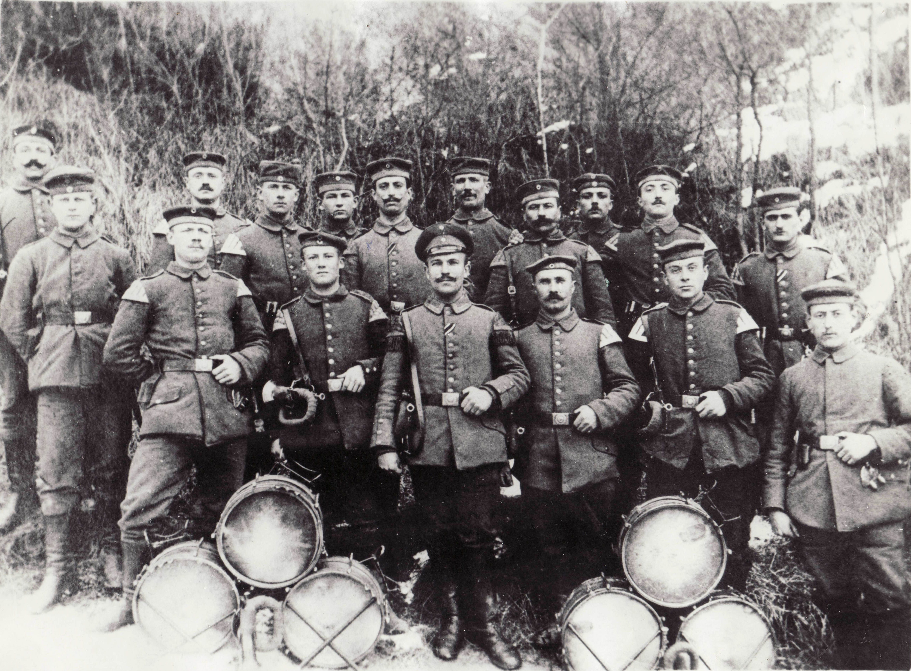
Die Idee und die Gründung
Als 1911 ein paar junge Männer die Idee entwickelten, gemeinsam Musik in einem Tambourcorps zu machen, stand deren Verwirklichung zunächst einmal das Problem im Wege, dass man diese Art von Musik nur in den umliegenden Städten betreiben konnte. Also sahen sich Heinrich Bauer, Wilhelm Dieken, Jean Holländer, Josef Müschen und Karl Thomas gezwungen, einen anderen Weg zu beschreiten: Sie machten sich Gedanken über die Gründung eines eigenen Vereins.
Man marschierte zunächst einmal probeweise an der Spitze des „Kameradschaftlichen Kriegervereins“ bei der Kaiser-Geburtstagsfeier – ja, den gab’s da noch – und des Kriegerverbandsfestes in Süggerath mit. Da das schon mal ganz gut ankam, fanden sich bald weitere fünf Interessierte: Andreas Kremer, Albert Küppenbender, Matthias Klein, Franz Mülfarth und Hubert Zitzen. Offensichtlich befand man diese Mannzahl als ausreichend, um einen Verein zu gründen. Dies geschah 1912.

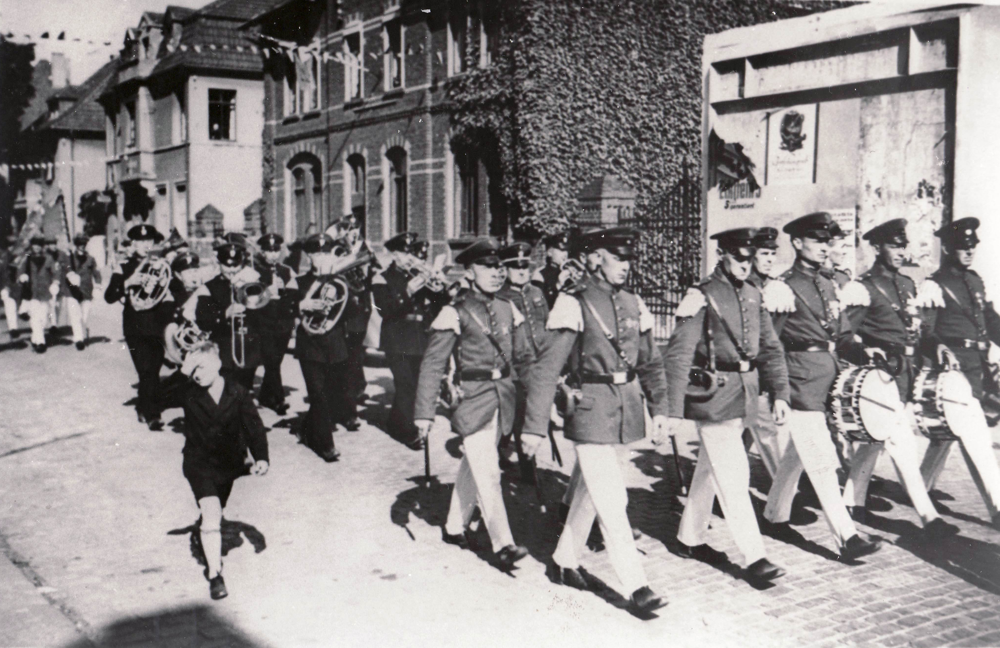
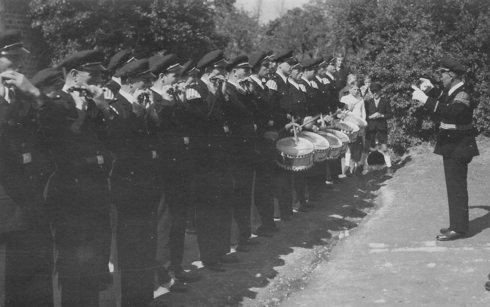
Erste Erfolge und schwere Jahre
Von Anfang an zeigte sich der Verein sehr rührig und veranstaltete schon 1913 mit Hilfe der anderen Ortsvereine einen Fassnachtszug durch Brachelen. Vom Reingewinn der Fassnachtsveranstaltung (der Begriff „Karneval“ wurde erst viel später gebräuchlich!) wurden die ersten Uniformen angeschafft, die man für standesgemäße auswärtige Auftritte unbedingt benötigte. Schon bald stellten sich erste Erfolge ein, die die Männer aus dem langen Dorf an der Rur zu gefürchteten Konkurrenten der Stadtvereine machten. Auch die Mitgliederzahl stieg „rasant“.
Noch 1913 traten Josef Deffur, Josef Jansweidt, Peter Zitzen und Paul Schmitz dem Verein bei. Leider wurden alle Aktivitäten des Vereins durch den Ausbruch des Ersten Weltkrieges gestoppt. Aber bereits 1919 wurde das Vereinsleben wieder in Gang gesetzt. Kaspar Erdweg, Gerhard Zitzen, Hubert Mertens und Johann Krieger kamen dazu. 1928 hatte der Verein bereits 24 aktive Mitglieder, die, wie man auf dem Vertrag von 1928 feststellen kann, „richtig“ Geld verdienten.
Diesmal blieben dem Vereinsleben, das sich prächtig und sehr erfolgreich entwickelte, immerhin 20 Jahre, bis 1939 der Zweite Weltkrieg ausbrach, der dem Verein noch wesentlich mehr zusetzte, als es der erste schon getan hatte. 10 aktive Mitglieder mussten ihr Leben lassen. Darüber hinaus hatte der Verein sein gesamtes Vereinsvermögen, Uniformen, Instrumente und Noten verloren.
Wiederaufbau in schwierigen Zeiten
Die Führung des Vereins übernahm Schmitze Jupp, der zusammen mit Mölfarths Fränz, Erdwechs Käsper und Mertense Hubett auch die Ausbildung der Neumitglieder übernahm. Die Kasse übernahm schon damals ein junger Mann namens Kaspar (Kääp) Sieberichs, der 1938 dem Verein beigetreten war.
Wer sich die gesamte Chronik zu Gemüte führt, kann schon ein paar Stunden Spaß mit den Anekdoten der damals selten spaßigen Zeit verbringen:

Jubiläen, die wegen Geldmangels um ein Jahr verschoben wurden

Neue Uniformen, für die man sich das Geld teilweise beim Kirchenchor geliehen hatte und erst mit dem Erlös aus einer Verlosung beim Familienabend zurückzahlen konnte
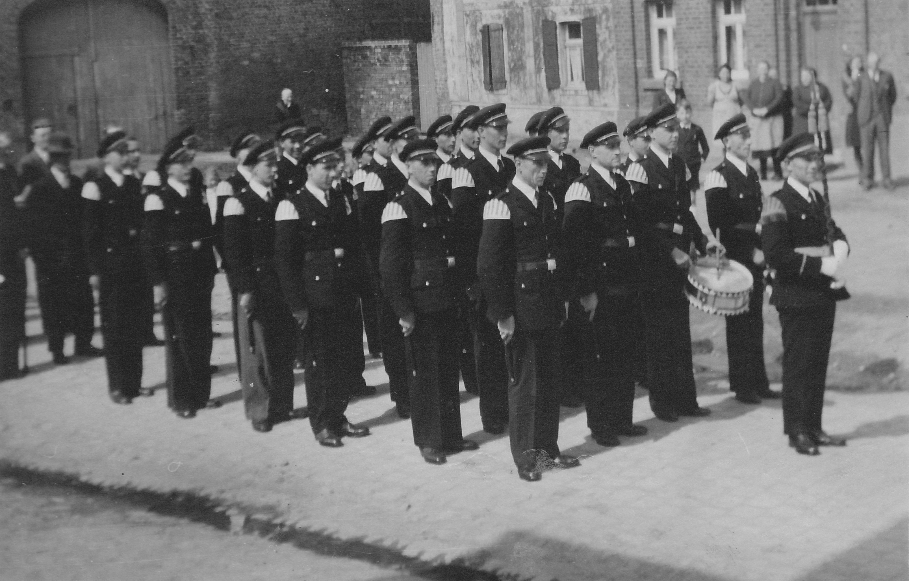
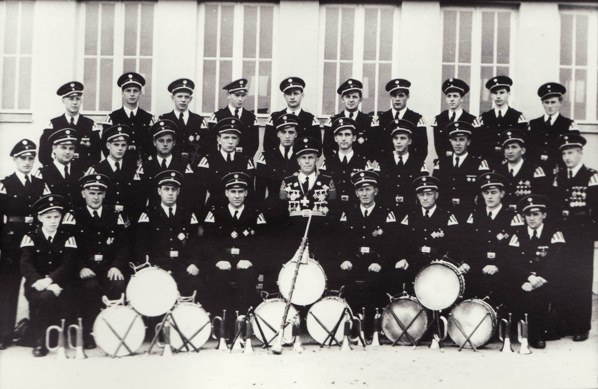
Eine „wilde“, aber auch eine gute Zeit, die endenden 40er und die beginnenden 50er, aber wie so häufig eine Zeit der stetigen Wechsel. Der Ehrenvorsitz des Vereins, damals ein sehr einflussreiches Amt, wechselte vom verstorbenen Jean Holländer auf Josef Kreutzer. Der langjährige Vorsitzende Josef Rick trat eine Küsterstelle in Rheydt an und gab sein Amt ab an Franz Mülfarth, der darüber hinaus auch Corpsführer war.
Eine kurzfristige finanzielle Erholung sorgte 1956 für den ersten Vereinsausflug an Mosel und Ahr. Beim 45-jährigen Bestehen 1957 waren noch 6 Gründungsmitglieder aktiv dabei.

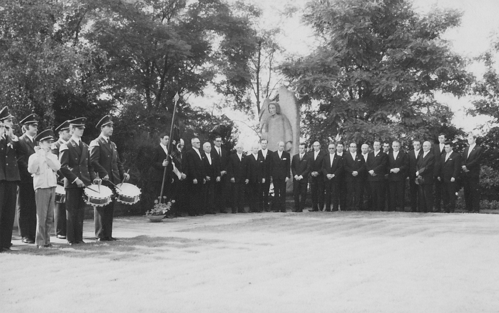


Prägende Persönlichkeiten und neue Wege
Anfang der 60er übernahm ein Mann die Stabführung von Franz Mülfarth, der in den folgenden Jahrzehnten zum Aushängeschild unseres Vereins und weit über die Grenzen Brachelens hinaus bekannt wurde: Kruetzere Willke. Er war ein Vorbild an Pflichtbewusstsein, das, gepaart mit seiner einnehmenden Menschlichkeit, viele Menschen nah und fern noch heute an ihn erinnert.
Manchmal aber geschehen aus heiterem Himmel Dinge, die man nur als Glücksfall bezeichnen kann. Die Söhne von Kruetzere Willke mussten ja nun auch irgendwann im spielfähigen Alter sein und offensichtlich hatten die jede Menge gute Freunde, denn Anfang der 70er sah unser Verein plötzlich ganz anders aus und hatte allen Grund, 1972 ordentlich auf sein 60-jähriges Bestehen anzustoßen.
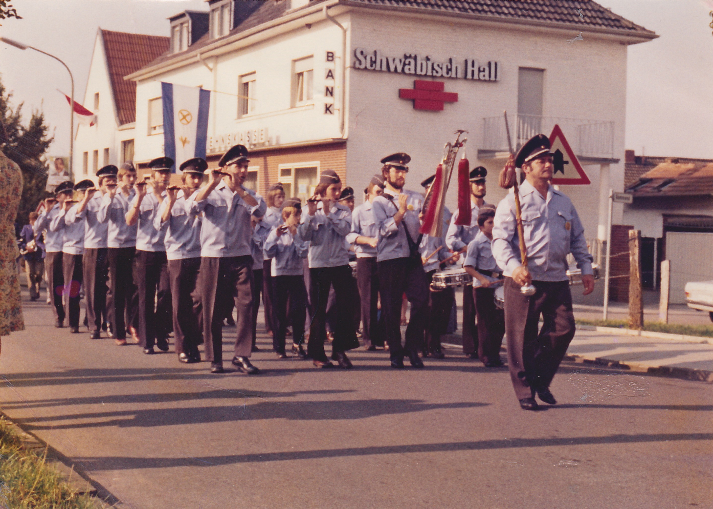
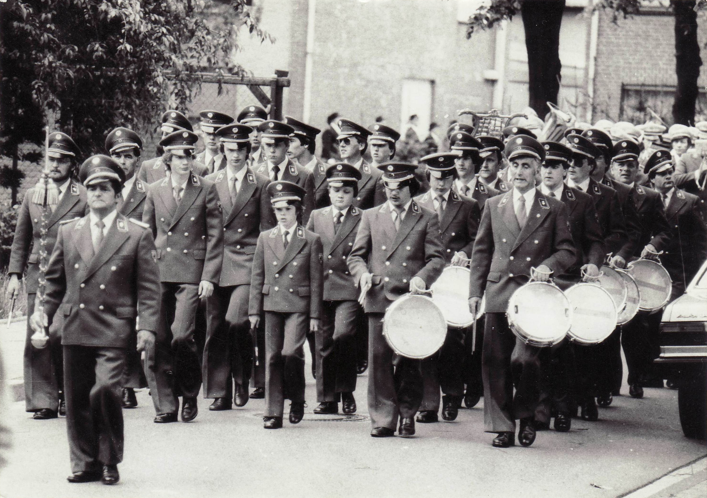
1975 gab es einen entscheidenden Einschnitt, weil wir nämlich auf das herkömmliche Notensystem „umtrainiert“ wurden. 1977 stiegen wir auch noch ins „Entsorgungsgeschäft“ ein, indem wir alle 2 Monate Brachelens Altpapier einsammelten. Jedenfalls versetzte uns diese Zusatzeinnahme in die komfortable Lage, in fast jedem Jahr einen Ausflug in die nähere oder weitere Umgebung unserer Heimat zu machen.
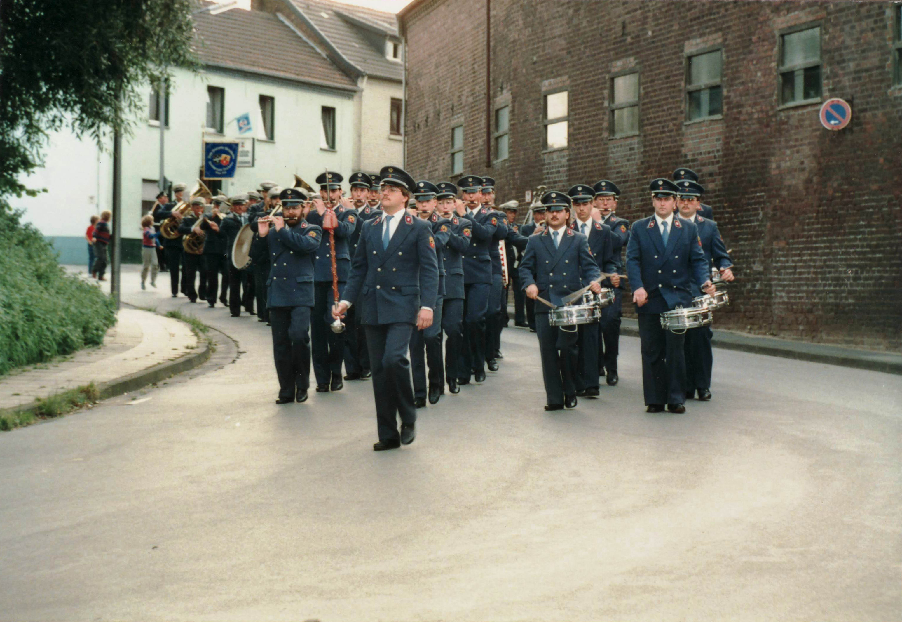
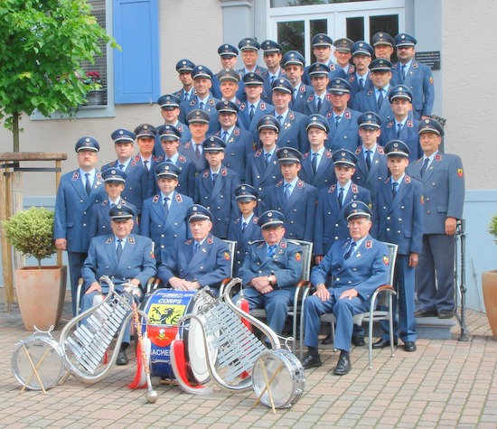
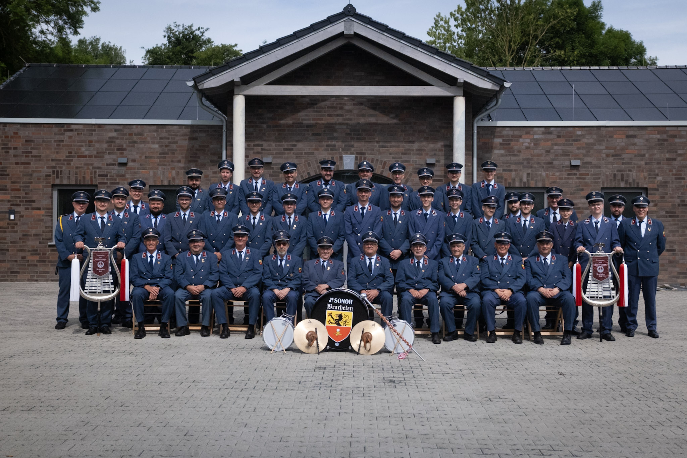

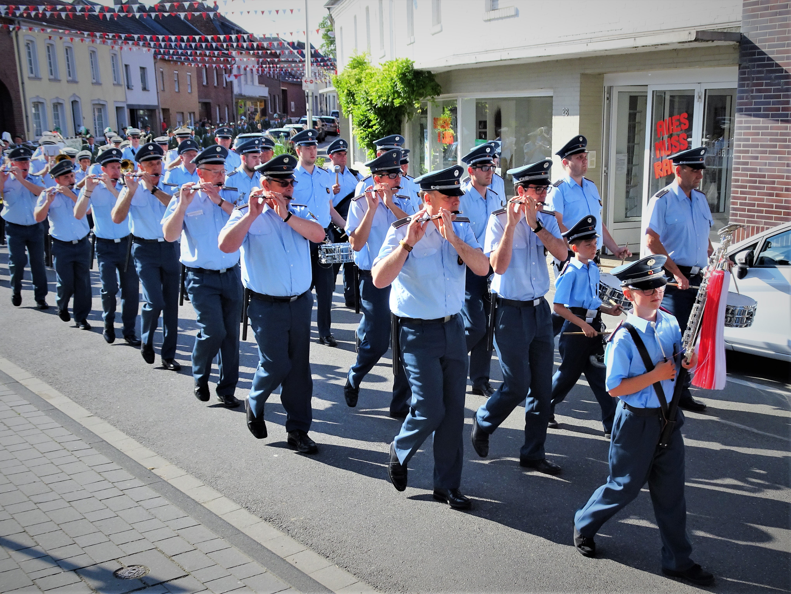
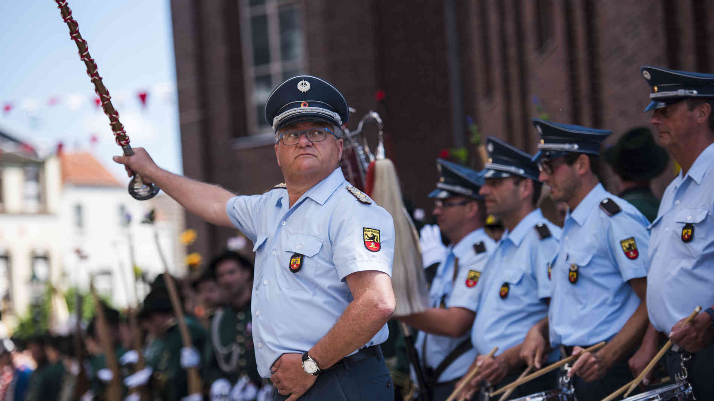
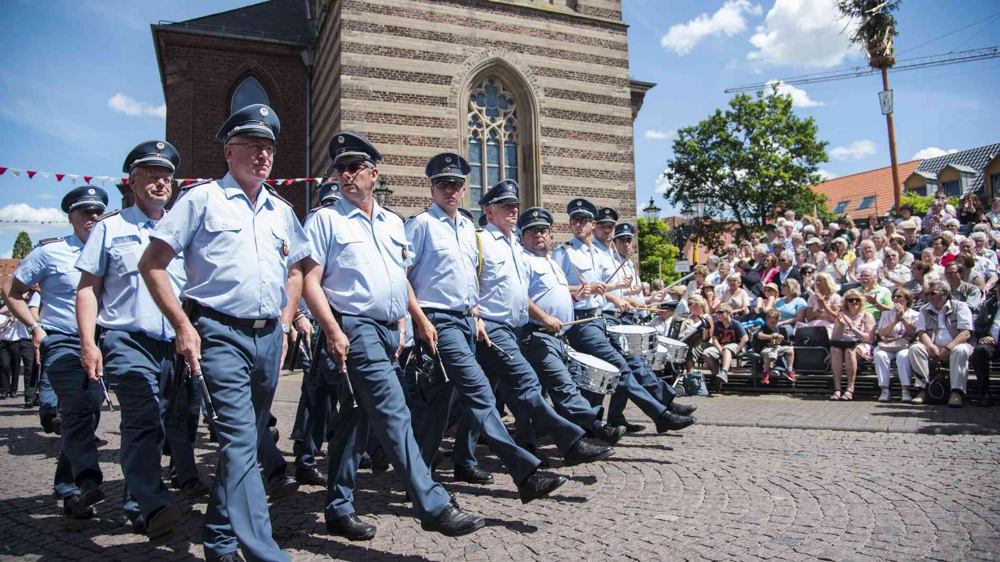
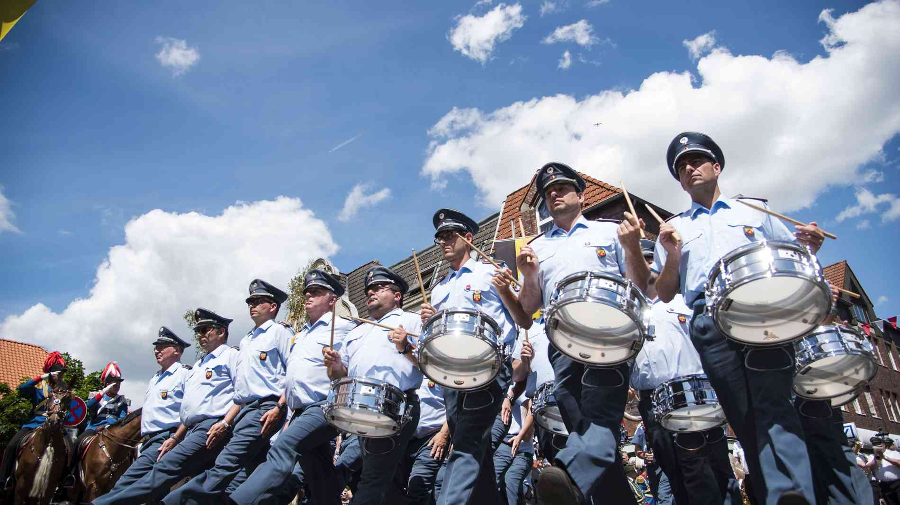

Im Jahr 1996 hatte ich wieder einmal ein einschneidendes Erlebnis: „Mein“ Vorsitzender Hubert Kreutzer (ich hatte nie einen anderen gehabt!) ließ sich nicht mehr erweichen und gab dieses Amt in die Hände seines Neffen Reinhold, der unseren Verein seit diesem Jahr umsichtig führt.
Festes Programm und lebendige Gemeinschaft
Nachdem wir schon seit 1913 das Schützenfest (Bronk) in Linnich verschönerten, kam im Jahr 1982 das Schützenfest in Korschenbroich (Unges Pengste) hinzu. Hier kommen wir genauso gern hin wie zu den tollen Festen in Venn (seit 1999) und Glehn (seit 2002), die seit vielen Jahren zu unserem festen Programm gehören:
- Pfingsten – klarer Fall, immer Korschenbroich
- eine Woche vorher – immer Brachelen
- eine Woche nachher – immer Linnich
- erstes Juli-Wochenende – Venn
- erstes September-Wochenende – Glehn
- letzter Januar-Sonntag (meistens) – St. Sebastianus
Entscheidend sind für uns aber nach wie vor – wie schon vor 100 Jahren – unsere Aktivitäten in Brachelen. Hier fühlen wir uns besonders wohl, weil man sich hier besonders geschätzt fühlt. Brachelener wissen, was sie an uns haben; wir wissen, was wir an den Brachelenern haben.
Also machen wir doch alle weiter so? Nicht so! Immer irgendwie anders, aber weiter. Und ich? Ja, ich bleib halt noch ein paar Jahre bei dem Haufen … so wie es 1966 schon gedacht war.
Der Text dieser Seite wurde von unserem Mitglied Willi Genotte anlässlich des 100-jährigen Jubiläums im Jahr 2012 verfasst.
Haben Sie Erinnerungen oder Fotos aus der Vereinsgeschichte?
Wir freuen uns über Ihre Nachricht!
← Zurück zur Startseite